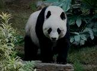

Le panda géant (Ailuropoda melanoleuca) est une espèce de mammifères, habituellement classée dans la famille des ursidés (Ursidae), endémique de la Chine centrale. Il fait partie de l'ordre des Carnivores, même si son régime alimentaire est constitué à 99 % de végétaux, principalement du bambou. Il ne vit que dans le centre de la Chine, dans des régions montagneuses recouvertes de forêts d'altitude, des provinces du Sichuan et du Gansu (dans les régions traditionnelles de l'Amdo et du Kham du Tibet oriental), ainsi qu'au Shaanxi, entre 1 000 et 4 000 mètres. Jusqu'en 1901, le panda géant était connu par les anglophones sous le nom de « parti-coloured bear2 ». Par la suite, il fut lié au panda roux (Ailurus fulgens), avec lequel il possède des caractéristiques communes comme le « sixième doigt » ou « faux pouce », qu'il partage également avec Simocyon batalleri, l'ancêtre européen d'il y a 9 millions d'années du panda roux, ayant la taille d'un puma, retrouvé à Batallones-1, près de Madrid3. Ailurus fulgens appartient en réalité à une autre famille, les Ailuridae, dans la superfamille des Musteloidea, qui comprend également les belettes, les moufettes et les procyonidés.
Morphologiquement, son nom normalisé chinois actuel, est « grand chat-ours » 4. En tibétain son nom signifie ours-panaché Le nom de genre Ailuropoda vient du grec / ailouros, « chat » et de πούς, ποδός pous, podós, « pied », soit « à pied de chat ». L’épithète spécifique melanoleuca en latin scientifique vient du grec μέλας, μέλανος / mélas, mélanos, « noir » et λευκός / leukós, « blanc ». Armand David (1826-1900) un missionnaire botaniste et zoologue collecta durant son séjour en Chine des milliers des spécimens de plantes et d’animaux, non décrits par la botanique et la zoologie de son époque5. Il les préparait et envoyait par caisses entières au Muséum national d’histoire naturelle pour description et classification plus précises6. Parmi les mammifères, le père David est célèbre pour sa découverte du Panda géant au Tibet oriental. Durant sa seconde mission d’exploration naturaliste en Chine centrale, il se fixa à Dengchigou, actuellement dans le xian de Baoxingn 1, à 200 km à l’ouest de Chengdu la capitale du Sichuan, dans une région d’ethnie tibéto-birmane Jiarong (au xixe siècle appelée en chinois Mantze 蛮族 manzu « barbare »). Chez un chasseur local, il voit pour la première fois la peau de ce qui semble être un ours blanc et noir de belle taille. Il charge des chasseurs indigènes de lui en ramener un. Dix jours plus tard, le 23 mars 1869, ils lui apportent un jeune « ours blanc » selon leur terme, capturé vivant et malheureusement tué pour la commodité du transport. Il note « Le jeune ours blanc qu’ils me vendent fort cher, est tout blanc, à l’exception des quatre membres, des oreilles et du tour des yeux, qui sont d’un noir profond. Ces couleurs sont les mêmes que celles de la peau adulte que j’ai examinée l’autre jour chez le chasseur Li. Il s’agit donc d’une nouvelle espèce d’ursidé qui est très remarquable non seulement par sa couleur, mais encore par ses pattes velues en dessous et par d’autres caractères »5. Il joindra à la caisse qui emportera l’animal à Paris, une note descriptive « Ursus melanoleucus, provist. – un mâle adulte avec tous ses os, une jeune femelle avec son squelette aussi […] Il est très difficile de tuer cet ours et pour avoir ce vieux mâle que je vous envoie, douze ou quinze chasseurs ont dû travailler pendant un demi-mois et sacrifier bon nombre de leurs chiens » (Armand David5, octobre 1869) Le zoologue Milne-Edwards du Muséum national d’histoire naturelle qui analysera la caisse envoyée par le père David indiquera « L’animal qui, sans contredit, présente le plus d’intérêt, est celui que M. l’abbé David nous avait signalé sous le nom d’Ursus melanoleucus. Par sa forme extérieure, il ressemble en effet beaucoup à un Ours, mais les caractères ostéologiques et le système dentaire l’en distinguent nettement et le rapprochent des Pandas et des Ratons. Il doit constituer un genre nouveau que j’ai appelé Ailuropoda. »
Le panda géant est volumineux et massif : il pèse de 80 à 125 kg, avec une moyenne de 105,5 kg ; il mesure de 1,50 à 1,80 mètre de longueur, avec une moyenne de 1,65 mètre8. Comme chez la majorité des grands mammifères, les femelles sont généralement plus petites et moins massives9. Le panda est noir et blanc. Il est majoritairement constitué de blanc, avec les oreilles, les pattes et le contour des yeux noirs. Son pelage épais le protège du froid des régions de haute altitude où il vit. Le panda possède six doigts dont un « faux pouce » opposable à ses cinq doigts. Phénomène de convergence évolutive, il provient de la transformation d'un os du poignet modifié (l'os sésamoïde). Stephen Jay Gould a utilisé cette particularité anatomique comme un exemple de « bricolage évolutif » dans son essai Le Pouce du panda10. Ce pouce est une adaptation liée à l'alimentation (il sert notamment à attraper les tiges de bambou dont il se nourrit en grande quantité) ou au déplacement11. Herbivore, il a de puissantes dents, pour broyer les bambous. Il possède 42 dents. Son ouïe et son odorat sont très fins : il utilise surtout ces deux sens pour s'orienter et se repérer. Sa vue, en revanche, est plutôt médiocre : moins bonne que celle du chat ou de l'homme.
Le Panda de Qinling est une sous-espèce de panda résidant uniquement dans les montagnes de Qinling en Chine a une altitude de 100 à 3 000 m12. Il se distingue notamment par sa fourrure ventrale brune. En 2019, un panda albinos est photographié pour la première fois dans le sud-ouest de la Chine
La classification taxonomique précise du panda a longtemps été discutée. Ainsi, « dans le passé, le panda roux a été classé dans une famille séparée, les Ailuridae avec le panda géant », mais cette classification est aujourd'hui abandonnée au bénéfice d'un classement du Panda géant chez les ursidés, classification basée sur sa dentition, l'étude de son squelette et la génétique14,15. Autre classification devenue obsolète, « tant le panda géant [...] que petit panda roux (Ailurus fulgens) ont été regroupés dans le passé comme procyonidés », la famille des ratons laveurs. Même si cette classification est également abandonnée, elle rappelle que les ursidés et les procyonidés sont deux sous-groupes assez proches parmi les carnivora16. Deux sous-espèces sont distinguées, la sous-espèce type A. m. melanoleuca et A. m. qinlingensis, le panda de Qinling qui se trouve dans la province du Shaanxi. Sa description tardive en Occident s'explique par son habitat situé dans des régions difficiles d'accès aux Européens avant le milieu du xixe siècle.
« Le panda géant est confiné à la Chine du centre-sud. Actuellement[Quand ?], il se trouve dans certaines parties de six chaînes de montagnes isolées (Minshan, Qinling, Qionglai, Liangshan, Daxiangling et Xiaoxiangling), dans les provinces du Gansu, du Shaanxi et du Sichuan (environ 75 % de la population habite la province du Sichuan). L'habitat du panda englobe environ 30 000 kilomètres carrés entre 102 et 108,3° de longitude est, et 28,2 à 34,1° de latitude nord14 ». Il habite des forêts de bambous, un habitat qui n'a cessé de régresser au bénéfice de l'agriculture, ne lui laissant aujourd'hui que des îlots dispersés et isolés les uns des autres
